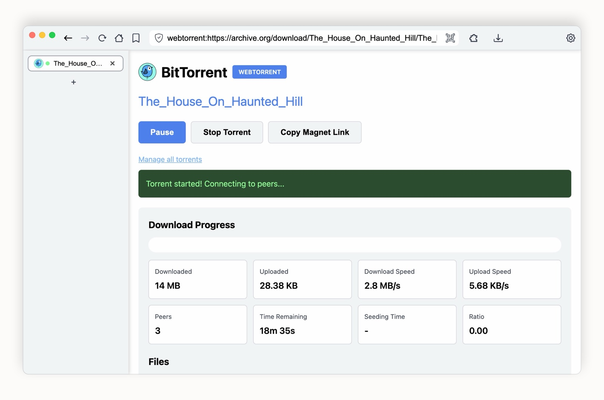
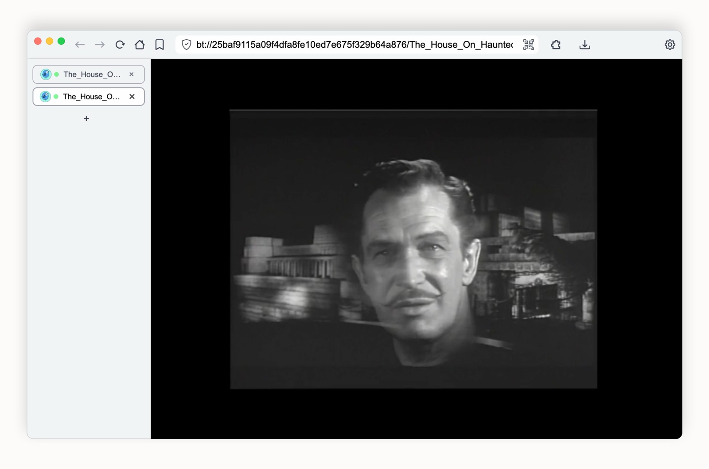
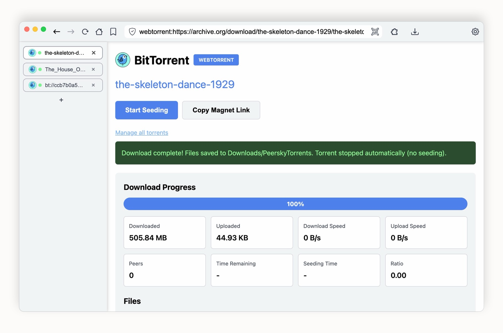
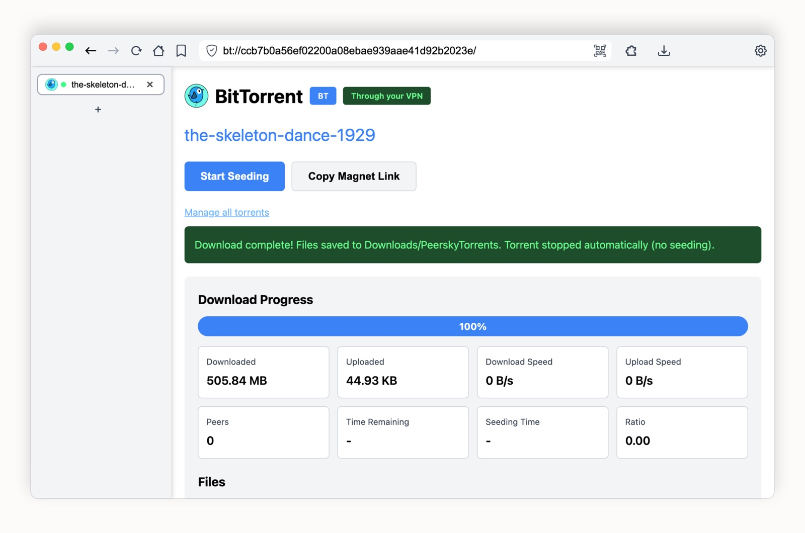
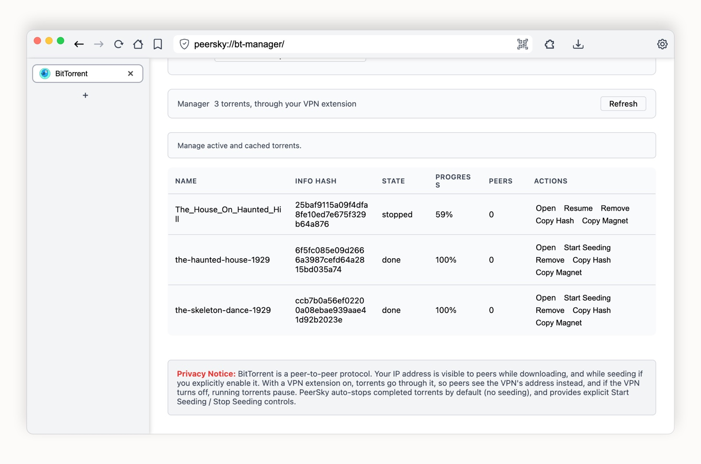

Downloading a torrent usually means installing one more app, and a lot of the popular ones come with ads, bundled offers or a paid tier. We didn't want any of that. PeerSky on your computer does it by itself: open a 🧲 magnet link and it opens in a tab, like any other page. Press Start, and a film can begin playing while most of it is still on its way.
BitTorrent is a peer-to-peer way to share files. Instead of one server sending the whole file to everyone, everyone downloading it sends each other the pieces they already have. So the more people share a file, the better it holds up, and nobody has to pay to host it. That makes it great for big files: Linux installers, open data, and public domain films like the ones in this post, which come from the Internet Archive.
We put this post together right after Halloween, which is why every film in it has a ghost or a skeleton. Torrents are in PeerSky for your computer, on Mac, Windows and Linux. Get it at peersky.p2plabs.xyz.
1. Open a torrent
Paste a 🧲 magnet link (it starts with magnet:) into the address bar, or click one on a page. You can also type bt:// followed by a torrent's info hash, or drop a .torrent file on the address bar.
The Internet Archive puts a torrent on almost everything it hosts, and that's how we got the films here. On a film's page, copy its Torrent link, then put webtorrent: in front of it in the address bar.
The torrent's page shows its name and its files. Nothing downloads until you press Start Torrent.
2. Watch while it downloads
Press Start Torrent and the page shows how it's going: how much has come in, how fast, from how many peers, and how long is left. Below that is the list of files. Press Play next to a video or a song and it opens in a new tab and starts playing, even if most of it hasn't downloaded yet. No staring at a progress bar.
PeerSky plays MP4 and WebM in the tab. Anything else, or a file whose picture or sound doesn't play, opens fine in your usual player from the folder.


3. It stops when it's done
Many torrent apps keep uploading, or seeding, after a download finishes, and leave your connection busy until you remember to stop them. PeerSky stops a torrent on its own when it's done. Want to give back to the swarm? It's a kind thing to do for a film you love. Press Start Seeding, and Stop Seeding whenever you like.
Files are saved in your Downloads folder, under PeerskyTorrents.

4. All your torrents in one place
Every torrent you start is listed under Settings, then BitTorrent (or peersky://bt-manager). From there you can open a torrent's page, pause or resume it, start or stop seeding, copy its 🧲 magnet link to send to a friend, or remove it from the list.
Why use it in PeerSky
Setting it up
A torrent appOne more app to install and keep up to date, often with ads or upsells.
In PeerSkyAlready there. A torrent link opens in a tab, with no ads.
After it finishes
A torrent appMany keep seeding until you stop them.
In PeerSkyStops on its own. Seeding is a button you press.
Opening what you got
A torrent appWait for the download, then find the file and open it in another app.
In PeerSkyPress Play while it downloads. Every file opens in a tab of its own, sealed off from the rest of your computer.
Your router
A torrent appMany open a port on your router for you (UPnP) so others can reach your computer.
In PeerSkyLeaves your router alone and doesn't announce itself on your local network.
When something goes wrong
A torrent appA crash takes the whole app down.
In PeerSkyTorrents run in a process of their own, so a crash there never takes your tabs with it.
About that sealing. A torrent can hold anything, web pages included, and you don't always know who made it. In PeerSky, every file from a torrent opens at its own bt:// address, in a sandbox, so a page that came in a torrent can't read your other files, your other torrents or anything else on your computer. Only torrent pages can control your downloads.
Use a VPN
BitTorrent is peer-to-peer. While you download, and while you seed if you choose to, the people sharing the same file can see your IP address, and so can anyone watching that swarm. That's true of every torrent app, not just PeerSky.
If you'd rather they didn't, turn on a VPN. A VPN extension in PeerSky works: torrents go through it just like your tabs, so peers see the VPN's address instead of yours, and the torrent page says Through your VPN. We also made sure a VPN that drops doesn't give you away. If it turns off, running torrents pause instead of carrying on without it, and pick up again when it's back. A VPN app for your whole computer works too, as long as it allows peer-to-peer traffic.
Through a VPN extension, torrents find peers through trackers and web seeds, so a few torrents may find fewer peers. Most Internet Archive torrents download from web seeds anyway.


Films in this post
House on Haunted Hill (1959), The Skeleton Dance (1929) and The Haunted House (1929). Happy haunting.
Download only what you're allowed to. You're responsible for what you download and share.
For the technical details, read BitTorrent in PeerSky.
Open a public domain classic and press Play. Get PeerSky at peersky.p2plabs.xyz.